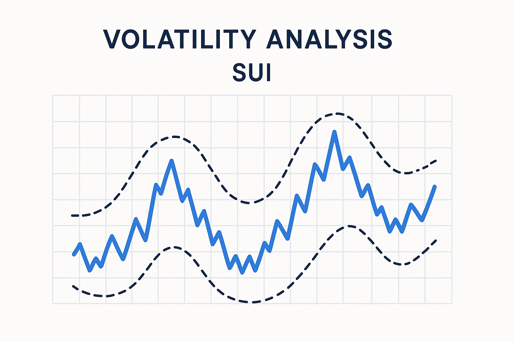

Sui Price Prediction for End of 2025: In-Depth Analysis and Insights
The information in this article is provided for educational purposes only and is not investment advice. Cryptocurrency investments carry risks.
Introduction
As of August 20, 2025, 01:00 AM EEST, Sui (SUI) is trading at approximately $1.95, establishing itself as a prominent layer-1 blockchain designed for high-speed, scalable decentralized applications (dApps). Developed by Mysten Labs, Sui leverages its unique object-oriented data model and Move programming language to offer unparalleled transaction throughput and low latency, making it a strong competitor in the Web3 and DeFi ecosystems. This article provides a comprehensive analysis of SUI’s price outlook for the end of 2025, exploring bullish and bearish scenarios, key growth drivers, and potential risks based on current market trends and ecosystem developments.

Current Situation
As of August 20, 2025, Sui’s price stands at around $1.95, reflecting a 30% increase from June 2025, when SUI traded at $1.50. Over the past 30 days, Sui has shown strong performance, with 62% of days closing in the green and a moderate volatility of 4.8%. The Fear and Greed Index at 74 indicates high investor confidence, driven by Sui’s growing adoption in DeFi, gaming, and NFT applications, as well as strategic partnerships with major Web3 projects. Over the past year, SUI’s price has risen from $0.90, achieving a 116% gain. Since its mainnet launch in 2023, when SUI was valued at $0.50, it has grown by 290%, fueled by its innovative architecture and expanding ecosystem.
Price Predictions for End of 2025
Analyst forecasts for Sui by December 2025 vary based on market conditions. Bearish scenarios suggest a potential decline to $1.20 if a projected 30–50% market correction occurs in early 2025. Moderate projections estimate SUI stabilizing between $2.50 and $3.50, supported by continued growth in its DeFi and gaming ecosystems. Bullish forecasts predict SUI could reach $4.00–$5.50, particularly if a market rebound occurs between February and April 2025. Some analysts project Sui hitting $3.00 by October 2025 if adoption of its layer-1 solutions accelerates.
Factors Driving Price Growth
- Scalable Layer-1 Solution: Sui’s high-throughput, low-latency blockchain is optimized for DeFi, gaming, and NFT applications, driving developer and user adoption.
- Web3 and DeFi Integration: Sui’s role in powering decentralized applications and financial protocols enhances its utility in the Web3 ecosystem.
- Strategic Partnerships: Collaborations with leading Web3 projects and enterprises bolster Sui’s real-world use cases and network growth.
- Market Rally: A projected cryptocurrency market surge in 2025, particularly from February to April, could create a favorable environment for SUI’s price growth.
- Developer Ecosystem: The adoption of the Move programming language and Sui’s developer-friendly tools attract a growing community of builders.
Risks and Downward Factors
- Market Volatility: A projected 30–50% market correction in early 2025 could exert downward pressure on SUI’s price, impacting investor sentiment.
- Regulatory Risks: Stricter global regulations on cryptocurrencies and DeFi platforms could limit Sui’s accessibility and adoption.
- Competition: Intense competition from other layer-1 blockchains like Aptos, Solana, and Ethereum could challenge Sui’s market share.
Volatility Analysis
From July to August 2025, Sui’s price rose from $1.50 to $1.95, marking a 30% gain with a volatility of 4.8%, indicating relative stability compared to historical trends. Annual growth of 116% underscores SUI’s strong performance. Technical indicators, including bullish trends in the 50-day and 200-day Exponential Moving Averages (EMAs), suggest continued upward potential. A projected market recovery from February to April 2025 could further support price growth, particularly as Sui expands its role in DeFi and gaming applications. Its scalable architecture and growing developer ecosystem position it well for sustained adoption and value appreciation.
Conclusion
By the end of 2025, Sui’s price is projected to range between $2.50 and $4.00, with the potential to reach $5.50 in a bullish market driven by its scalable layer-1 solutions, Web3 integration, and strategic partnerships. However, investors should remain cautious of market volatility, regulatory uncertainties, and competition from other blockchains. Thorough research and risk management are essential before investing in Sui.